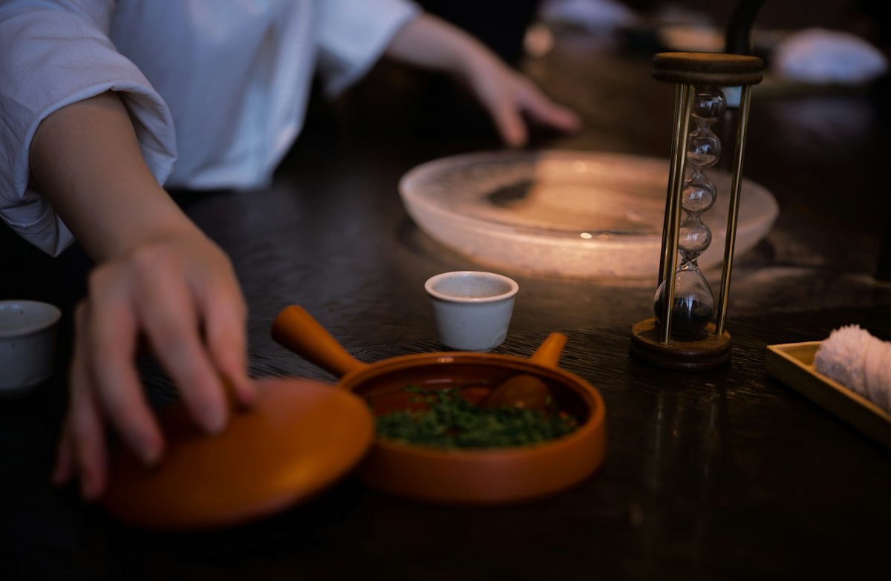
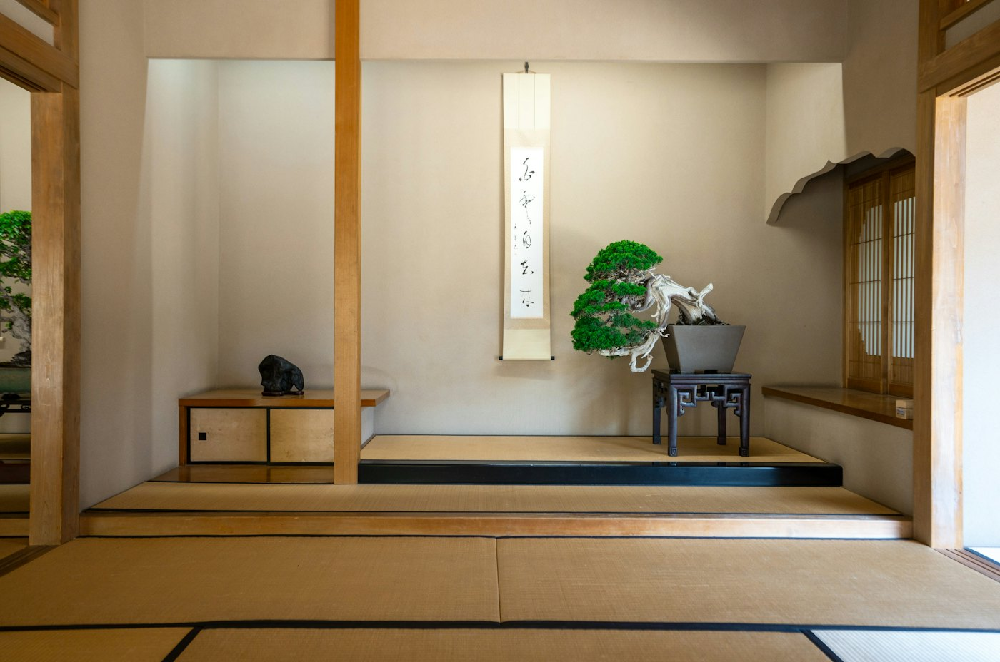

Origini e classificazione
La storia della bevanda e le grandi famiglie del tè.
- Accenni storici
- Le categorie
Corsi da Tea Sommelier in quattro livelli, lezioni di cerimonia del tè giapponese e, dal 1° dicembre, il Tea Club: le lezioni in video, ogni mese, da casa tua.
Un abbonamento mensile con le lezioni in video: cerimonia, degustazione, tè del mondo. Guardi quando vuoi, dal telefono o dal computer, e ogni mese si aggiunge qualcosa di nuovo.






I video si aprono solo ai soci, sono in streaming e non si scaricano. Titoli di esempio.
Nuove lezioni in video, in ordine di livello.
Dal telefono, dal tablet o dal computer.
Con carta, senza bonifici. Disdici quando vuoi.
Un ripasso tra un livello e l'altro.
Il programma va dalla classificazione del tè fino ai metodi di preparazione avanzati. In presenza a Lucca, online, oppure in modalità privata negli orari che scegli tu.
La storia della bevanda e le grandi famiglie del tè.
Come la foglia diventa tè, e come si estrae al meglio.
I paesi produttori e i loro modi di bere il tè.
Strumenti, preparazioni avanzate e servizio professionale.
Tutti i tè e l'oggettistica per prepararli sono compresi. Ti servono solo un bollitore elettrico, una tazza e un filtro.


Gesti essenziali, accompagnati dal borbottare dell'acqua. Il resto è tutto da scoprire: il verde del matcha, la bellezza rustica degli utensili, il gusto dei dolci, il profumo del tè.
Una cerimonia privata, solo per voi, nella stanza del tè della scuola a Lucca. I buoni già acquistati si possono usare entro il 31 dicembre 2026.
Prenota un'esperienzaLezioni di cerimonia del tè giapponese con un'insegnante della scuola Omotesenke: la calma, l'ascolto di sé, la cura di ogni gesto.
«Ogni incontro è unico e non si ripeterà.»
È il principio che guida ogni cerimonia. E il motivo per cui ogni lezione, anche online, è preparata per chi la segue.

Insegnante di cerimonia del tè della scuola Omotesenke e tea sommelier. Studia il mondo del tè da molti anni. La sua Scuola Jaku nasce a Lucca come luogo per imparare la cerimonia del tè e poi aggiunge i corsi da tea sommelier, in presenza e online, nella convinzione che la Via del Tè possa rendere migliore la vita di chi la pratica.
L'arte della degustazione professionale. A cura di Silvia Battistini. Dalla storia della bevanda alle tecniche di lavorazione e infusione, fino ai materiali e al servizio.
Abbonamento mensile con rinnovo automatico su WordPress e WooCommerce, accesso ai video solo per chi paga, disdetta in un clic.
In streaming, senza link da copiare o file da scaricare. Leggeri anche dal telefono.
Oggi le iscrizioni passano dal bonifico. Con la carta chi decide la sera si iscrive subito.
Un referente fisso, tempi di risposta scritti, aggiornamenti e backup ogni giorno.
Aggiungi una data dal telefono e compare nel calendario e nel modulo d'iscrizione.
Teniamo contenuti, iscritti e prodotti che hai già: nessuno perde l'accesso.